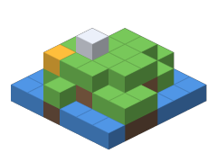

Эту страницу разобрал litehtml, нарисовал собственный растеризатор, а кнопки оживил QuickJS. Всё это — C/C++, собранный в WebAssembly и оттранслированный Spider в Lua.
Открыть демо Что внутри ↓
Цепочка из обычных программ: ни строчки движка браузера на Lua руками.
Транслятор wasm → Lua: обходит лимиты LuaJIT на слоты, прыжки и вложенность.
Пак-рантайм с ABI vc.h и WASI: модели frame и main, профиль, стеки падений.
canvas, постэффект и растеризация треугольников на GPU прямо в UI-шейдере.
Doom, Quake, Minecraft 1.5.2, Pong и все картриджи WASM-4.
litehtml + gumbo, stb_truetype, stb_image и QuickJS-NG в одном модуле.
MCP-сервер: запуск, клики, скриншоты, журнал действий и сценарии.
Вкладки, аккордеон, модальное окно, форма и тёмная тема — всё на JS.